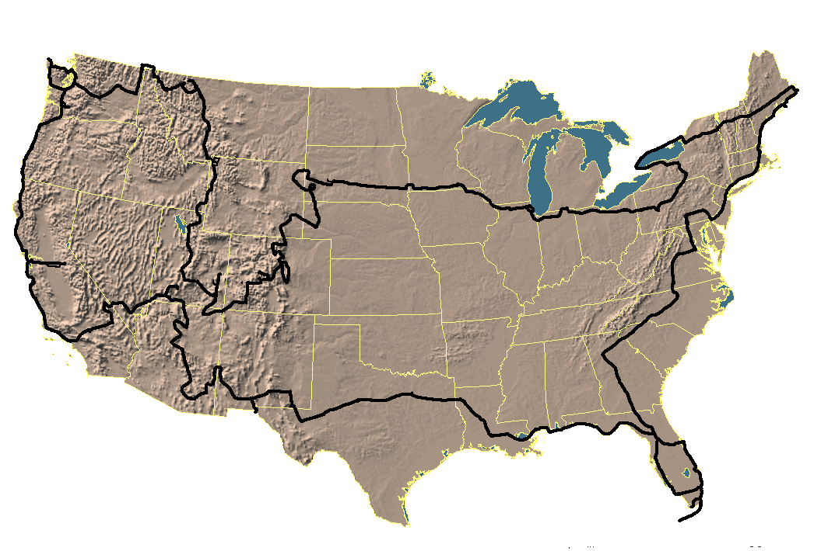

After Dirk had thought about the offer, a couple of days, he found out that he actually wanted to go, so Dirk told Klaus about the change of plans, and so they stated to prepare for:

About two months before the departure (somewhere at the end/beginning of December/January) the guys sat down and wrote a letter which they posted out on the news net (rec.motorcycles and alt.travel). The posting was called "what to see and what motorcycles to buy in the US".
It didn't take long, before tons and tons of replies came in. Alot of friendly people answerd all the questions they had asked. Most of them offerd more help if they needed any - and boy did they "exploit" those people :-)
After a couple of letters had been sent hence and forth, people started inviting the two danes to visit them, if they should be passing through.
...
On March the 14. their parents drove them to the trainstation, from where they would take the train to Hamburg, Germany. The next day they would take the plane from Fulsbuettel/Hamburg via Heathrow/London to Dulles/Washington D.C. There they were picked up by a guy (David Lee) they had met on the internet about a week before their departure. Later it would show, that Dave's address would become their american headquarter.
When they had bought the bikes, the trouble started. To get the temporary tags, they had to have an insurance. To get an insurance, they had to have a local (Virginia) driverslicens. To get driverslicens, they had to make a theoretical and later a practical examn, where they had to show up with their motorcycles. But how where they supposed to show up with their motorcycles if they couldn't ride them without tags?
Then they found out that they couldn't even make the theoretical examn, because they had a tourist visa and not a student visa. So what now? They tried to phone some insurance-companys and told them their problem until they found a company that was willing to insure foreigners. The prices were of course double as high as the "ordinary" insurance-companys :-( but what else should (could) they do?
With the insurance in their pocket, they went to the dealer and got their temporary tags. Next stop DMV to get the "real" licensplate.
Now they were ready to HIT THE ROAD.
Their first trip was a one-day-trip to West Virginia and back again. Just to get to know their bikes and of course for joy. Whith them came Dave and one of his friends (Andy). Dave & Andy showed them some GREAT roads.
On the ??th of March they said goodbye to Dave and Betsy (Dave's wife), for the next 5 months.
The first day was horrible. Klaus ran out of gas, because his gasolin- light didn't work. After having ridden the skyline drive and heading for Chapel Hill (their next $overnatning$) they were pulled over by the police. SPEEDING :-( Klaus told the police officer that we had just started our trip and that we still hadn't ajusted to the miles, since they were normaly calculating in kilometers. The officer understood ( :-D and let them go. But the day wasn't over yet! Eight o'clock in the evening, just after they had filled up their bikes, Klaus saw that his bike had a flat tire. What now? Luckyly the person at the gasstation knew somebody, who could fix the tire, but when would he be done, and could we get to Chapel Hill before too late? Short before 12 o'clock we got to our destination - totally bushed.
But having a start like that has also some positive sides: IT COULD ONLY GET BETTER?
And it did!
After Chapel Hill our next stop was Atlanta, our first big city with a "real" (compared to D.C.) skyline. It was breath taking. The sun was just setting as we drove downtown. The skyline looked as if it was glowing, everything had a redish touch.
Todd the guy we would stay at for the night, had some of his friends over. All at least 6'3 in heigth and 6'3 in width (no offence). Just typical footballplayers :-) Even before we had entered Todd's appartment (36th floor, downtown Atlanta) we had a beer in our hands. Todd was going on a world- tour himselfe, so his buddy's had helped him move his stuff that day. Later that night, after a pizza and a couple of beer's, we went out, which didn't make us more sober :).
The next morning when we woke up, breakfast was waiting for us. McDonalds had made coffee (not too hot :), hashbrowns and some muffins, mmmh, great after a hangover. As it would show this was our first and only time we had fast food breakfast.
That day we took a look at Atlanta's sights. In the afternoon, when we came back, we had to find another place to stay, since Todd and his wife Karen (way to go Todd :) were going to Toronto. So we went to one of Todd's students: Bill Neus!
As we drove into the street, we saw some guy's dancing. A beer in their one hand (seem's to be a Atlantan tradition) and the beat of the music in the other. As the day before we where $taget imod$ in a unbelievably open and friendly way. These guy's really showed us how to party. At night we went to this "dance bar" called Baja (pronounced baha) where the female employee's weare bikinis. And boy did they have a body. Definatly a place we can recommend :)
All in all Atlanta (or Hotlanta as we call it) showed us how you live a college-football-student life in the US: PARTY! P-A-R-T-why? - 'cause we gotta.
We were now heading for Florida, where we first would take a look at Orlando (Disney World, Universal) and then go for Miami to visit a friend from Germany. On the way to Miami we took a quick look at Cape Canaveral.
In Miami (Key Biscane) we stayed a few days. It was a great headquarter, from where you could do some daytrips. For example Everglades or Key West (two daytrip). The beaches though, were the main attraction.
Hooters (?)
Key West sunset's are unbelievably beautiful. We understand why Hemmingway liked this place so much. It's uniqe. Another thing one has to do is go snorkling. It's amazing how colorfull fishes can be. And so many different kinds.
After Key West we returned to Miami, where we relaxed a bit, before we continued to Tampa.
On the way to Tampa we took rout ???, which goes through the northern part of the Evergaldes. It was the first time we drove slower then the speedlimit - the reason is, that we scouted for some aligators, which we hadn't seen much of yet. Somewhere on the road we saw a sign: Hoovercrafts. Reason enough to stop and ask for the price. Half an hour later we where sitting in such a boat and enjoying the wind in our hair. Damn' those things a loud - but fun!
Back on the road it was the first time we drove slower then the speedlimit - the reason is, that we scouted for some aligators, which we hadn't seen much of yet. It's funny, in Denmark an aligator is an exotic animale, in the US (or at least in Florida) you see it laying (?) at the side of the road.
Slowly it was getting dark, because we had left Key Biscane pretty late. $oven i det$ we saw a BIG *BLACK* cloud getting closer :-(. It didn't take long, before we were in the middle of our first encounter with rain. Since we were on a Intersate we couldn't just pull over and put our raingear on so we waited for the next exit. As it should so that was time enough to get some of our clothes wet. It was a rest area where we pulled over. After having some troubles with the officer at the rest area, we put on our rain gear and continued our journey to Tampa.
In Tampa we were supposed to meet Dan & co. (some of the guys/girls we met in Atlanta). The question was, "will they still be awake?, will we find his place?, will anybody be home?". As we walked up to the door, we then saw a sign saying: "Cowboy & D-man" (our synonyms while we were in Atlanta). The door opend and we were pulled inside. Partytime - somehow we had this strange feeling of deja vu.
Inside we where introduced to the new guys we hadn't met in Atlanta. After changing clothes we went out to some bar. Half an hour later the bartender said "last call" and Klaus & Dan went up to the bar to get some beer. Unfortunatly Klaus didn't know that Dan was getting beer and vice versa, which resultet in 7 pitchers of beer. 15 minutes had we to inhale the beer, since the bar was closing - Oops! We all tried to do our best, but Klaus did too much of it :-( outside the bar he had to get rid of some of the beer :-) Shit happens.
Back at Dan's place the party continued late into the night.
The next day went pretty similar to the first nigth. Unbelievable how those college dudes can drink. Beer in the morning, beer in the afternoon and beer in the evening.